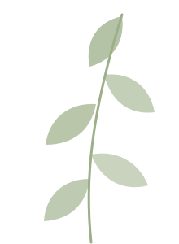
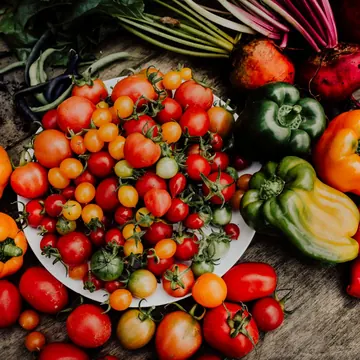
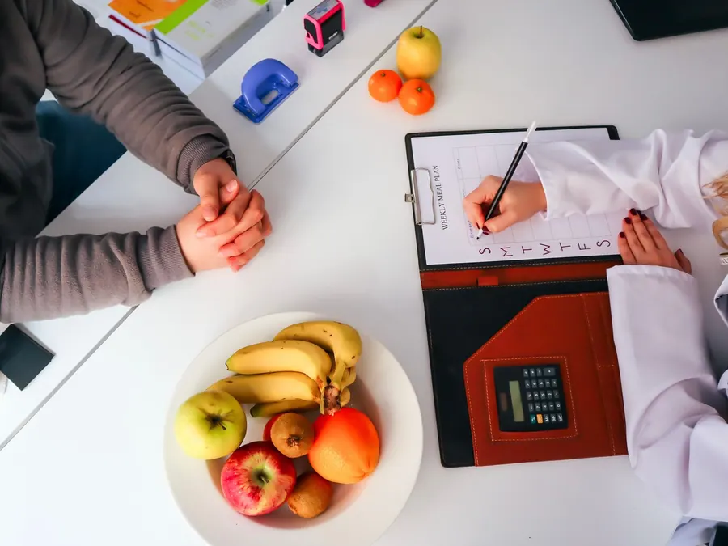
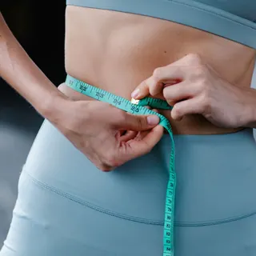
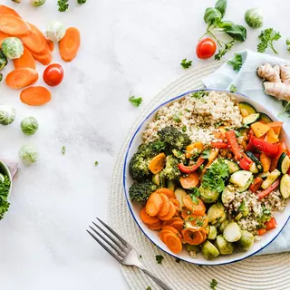
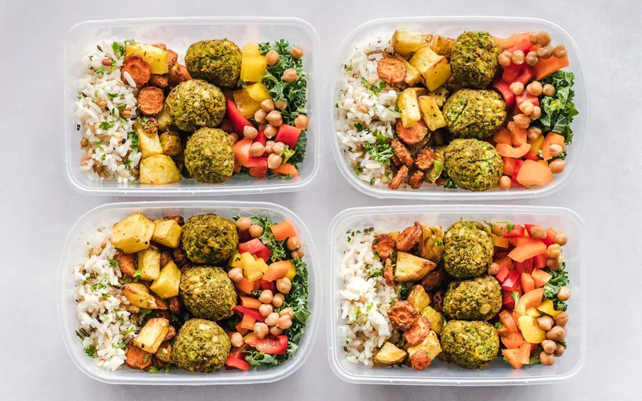
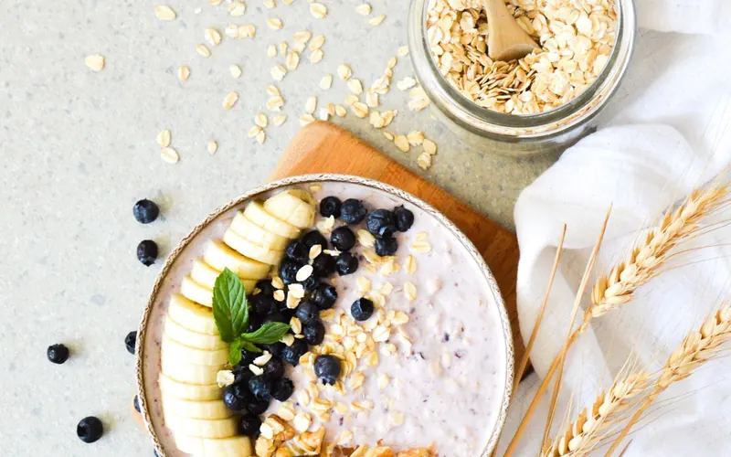

Consulta avulsa
Para quem quer começar com uma orientação completa.
- 1 consulta com avaliação
- Plano alimentar personalizado
- Lista de compras

Plano alimentar feito para a sua rotina, sem cortar tudo o que você gosta.

Comida de verdade,
sem radicalismo

Meu trabalho é ajudar você a construir hábitos saudáveis de forma leve, com um plano alimentar personalizado, sem dietas restritivas e com acompanhamento próximo. Cada orientação parte da sua rotina, do seu orçamento e dos alimentos de que você gosta.


Soluções completas para todas as fases da sua jornada. Toque em um serviço para saber mais.
Perda de peso gradual, com comida de verdade e estratégias que você consegue manter depois que o plano termina.
Distribuição de proteínas e energia ao longo do dia, ajustada ao seu treino e à sua rotina de refeições.
Alimentação pensada para antes, durante e depois do treino, de acordo com a modalidade e a intensidade.
Mudanças pequenas e consistentes para melhorar a relação com a comida, sem regras impossíveis.
Planos sem carne ou totalmente vegetais, com atenção a ferro, B12, proteínas e variedade no prato.
Atendimento por videochamada com a mesma avaliação da consulta presencial, de qualquer lugar do Brasil.
Um processo simples, para você começar hoje.
Escolha o formato ideal de acompanhamento. Valores informados no agendamento.
Para quem quer começar com uma orientação completa.
Tempo para criar hábitos com ajustes ao longo do caminho.
Para objetivos de médio prazo, com mais retornos.
Marque as refeições feitas, veja substituições e leve a lista de compras pronta para o mercado.
"O acompanhamento mudou minha relação com a comida. Hoje eu planejo a semana sem sofrimento."
Mariana
"Plano simples de seguir e atendimento atencioso. As marmitas da semana salvaram minha rotina."
Carlos
"Gostei de não precisar cortar tudo. O plano respeitou meus horários e meus gostos."
Juliana
"As orientações para o treino ficaram claras e práticas. Tiro minhas dúvidas pelo WhatsApp."
Rafael
"Consulta online muito bem feita. Recebi o plano rápido e com lista de compras pronta."
Beatriz
"Atendimento acolhedor e sem julgamentos. Me senti ouvido em cada retorno."
Lucas
Depoimentos fictícios, criados para fins de demonstração.
Ideias práticas para uma alimentação ainda mais saudável.



Um passo a passo para montar marmitas equilibradas para a semana inteira, gastando pouco tempo na cozinha.
A consulta acontece por videochamada, com a mesma avaliação da consulta presencial: conversa sobre rotina, histórico de saúde, preferências e objetivos. Você recebe orientações para fazer as medidas em casa e o plano chega pelo aplicativo.
Se você tiver exames de sangue recentes (até 6 meses), vale levar ou enviar antes da consulta. Se não tiver, tudo bem: quando for necessário, a solicitação é feita durante o atendimento.
O atendimento é particular. Ao final, você recebe recibo para solicitar reembolso, caso o seu plano de saúde ofereça essa opção.
Depende do seu objetivo. Há consulta avulsa e acompanhamentos de 3 ou 6 meses, com retornos periódicos para ajustar o plano à sua evolução e à sua rotina.
O plano alimentar personalizado é enviado em até 3 dias úteis após a consulta, junto com a lista de compras e sugestões de receitas.
Pode, sim. Basta avisar com pelo menos 24 horas de antecedência para escolher um novo horário sem custo adicional.